공조냉동기계산업기사 (2020-06-06 기출문제)
1과목: 공기조화
1. 증기난방에 관한 설명으로 틀린 것은?
- 열매온도가 높아 방열기의 방열면적이 작아진다.
- 예열 시간이 짧다.
- 부하변동에 따른 방열량의 제어가 곤란하다.
- 증기의 증발현열을 이용한다.
(정답률: 73%)

2. 온풍난방의 특징에 대한 설명으로 틀린 것은?
- 예열부하가 거의 없으므로 가동시간이 아주 짧다.
- 취급이 간단하고 취급자격자를 필요로 하지 않는다.
- 방열기기나 배관 등의 시설이 필요 없으므로 설비비가 싸다.
- 토출 공기온도가 높으므로 쾌적성이 좋다.
(정답률: 81%)
3. 공조방식 중 변풍량 단일덕트 방식에 대한 설명으로 틀린 것은?
- 운전비의 절약이 가능하다.
- 동시 부하율이 고려하여 기기 용량을 결정하므로 설비용량을 적게 할 수 있다.
- 시운전시 각 토출구의 풍량조정이 복잡하다.
- 부하변동에 대하여 제어응답이 빠르기 때문에 거주성이 향상된다.
(정답률: 70%)
4. 풍량이 800m3/h인 공기를 건구온도 33℃, 습구온도 27℃(엔탈피(h1)는 85.26kJ/kg)의 상태에서 건구온도 16℃, 상대습도 90%(엔탈피(h2)는 42kJ/kg)상태까지 냉각할 경우 필요한 냉각열량(kW)은? (단, 건공기의 비체적은 0.83m3/kg이다.)
- 3.1
- 5.4
- 11.6
- 22.8
(정답률: 50%)
5. 겨울철 침입외기(틈새바람)에 의한 잠열 부하(q1, kJ/h)를 구하는 공식으로 옳은 것은? (단, Q는 극간풍량(m3/h), △t는 실내ㆍ외 온도차(℃), △x는 실내ㆍ외 절대 습도차(kg/kg')이다.)
- 1.212×Q×△t
- 539×Q×△x
- 2501×Q×△x
- 3001.2×Q×trianglex
(정답률: 56%)
6. 공기조화 부하의 종류 중 실내부하와 장치부하에 해당되지 않는 것은?
- 사무기기나 인체를 통해 실내에서 발생하는 열
- 유리 및 벽체를 통한 전도열
- 급기덕트에서 실내로 유입되는 열
- 외기로 실내 온ㆍ습도를 냉각시키는 열
(정답률: 59%)
7. 에어필터의 포집방법 중 무기질 섬유 공간을 공기가 통과할 때 충돌, 차단, 확산에 의해 큰 분진입자를 포집하는 필터는 무엇인가?
- 정전식 필터
- 여과식 필터
- 점착식 필터
- 흡착식 필터
(정답률: 74%)
8. 다음 중 자연 환기가 많이 일어나도 비교적 난방 효율이 제일 좋은 것은?
- 대류난방
- 증기난방
- 온풍난방
- 복사난방
(정답률: 86%)
9. 열교환기 중 공조기 내부에 주로 설치되는 공기 가열기 또는 공기냉각기를 흐르는 냉ㆍ온수의 통로수는 코일의 배열방식에 따라 나뉜다. 이 중 코일의 배열방식에 따른 종류가 아닌 것은?
- 풀 서킷
- 하프 서킷
- 더블 서킷
- 플로우 서킷
(정답률: 72%)
10. 다음 가습기 방식 분류 중 기화식이 아닌 것은?
- 모세관식 가습기
- 회전식 가습기
- 적하식 가습기
- 원심식 가습기
(정답률: 67%)
11. 각 실마다 전기스토브나 기름난로 등을 설치하여 난방하는 방식을 무엇이라고 하는가?
- 온돌난방
- 중앙난방
- 지역난방
- 개별난방
(정답률: 87%)
12. 송풍기 특성곡선에서 송풍기의 운전점은 어떤 곡선의 교차점을 의미하는가?
- 압력곡선과 저항곡선의 교차점
- 효율곡선과 압력곡선의 교차점
- 축동력곡선과 효율곡선의 교차점
- 저항곡선과 축동력곡선의 교차점
(정답률: 66%)
13. 방열량이 5.25kW인 방열기에 공급해야 할 온수량(m3/h)은? (단, 방열기 입구온도는 80℃, 출구온도는 70℃이며, 물의 비열은 4.2kJ/kgㆍ℃, 물의 밀도는 977.5kg/m3이다.)
- 0.34
- 0.46
- 0.66
- 0.75
(정답률: 46%)
14. 송풍기 번호에 의한 송풍기 크기를 나타내는 식으로 옳은 것은?
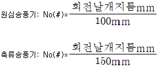
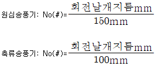
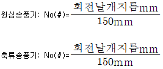
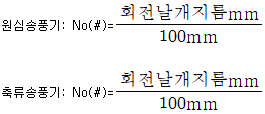
(정답률: 71%)
15. 외기와 배기 사이에서 현열과 잠열을 동시에 회수하는 방식으로 외기 도입량이 많고 운전시간이긴 시설에서 효과가 큰 방식은?
- 전열교환기 방식
- 히트 파이프 방식
- 콘덴서 리히트 방식
- 런 어라운드 코일 방식
(정답률: 66%)
16. 보일러를 안전하고 경제적으로 운전하기 위한 여러 가지 부속기기 중 급수관계 장치와 가장 거리가 먼 것은?
- 증기관
- 급수 펌프
- 급수 밸브
- 자동급수장치
(정답률: 77%)
17. 압력 10000kPa, 온도 227℃인 공기의 밀도(kg/m3)는 얼마인가? (단, 공기의 기체상수는 287.04J/kgㆍK이다.)
- 57.3
- 69.6
- 73.2
- 82.9
(정답률: 54%)
18. 다음 공조방식 중 중앙방식이 아닌 것은?
- 단일덕트 방식
- 2중덕트 방식
- 팬코일유닛 방식
- 룸 쿨러 방식
(정답률: 69%)
19. 다음 중 엔탈피가 0kJ/kg인 공기는 어느 것인가?
- 0℃ 습공기
- 0℃ 건공기
- 0℃ 포화공기
- 32℃ 습공기
(정답률: 66%)
20. 아래 습공기선도에서 습공기의 상태가 1지점에서 2지점을 거쳐 3지점으로 이동하였다. 이 습공기가 거친 과정은? (단, 1, 2회 엔탈피는 같다.)
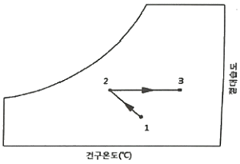
- 냉각 감습-가열
- 냉각-제습제를 이용한 제습
- 순환수 가습-가열
- 온수 감습-냉각
(정답률: 63%)
2과목: 냉동공학
21. 다음의 냉매가스를 단열압축 하였을 때 온도상승률이 가장 큰 것부터 순서대로 나열된 것은? (단, 냉매가스는 이상기체로 가정한다.)
- 공기＞암모니아＞메틸클로라이드＞R-502
- 공기＞메틸클로라이드＞암모니아＞R-502
- 공기＞R-502＞메틸클로라이드＞암모니아
- R-502＞공기＞암모니아＞메틸클로라이드
(정답률: 65%)
22. 몰리에르선도 상에서 압력이 증대함에 따라 포화액션과 건포화증기선이 만나는 일치점을 무엇이라 하는가?
- 한계점
- 임계점
- 상사점
- 비등점
(정답률: 85%)
23. 다음 중 냉동기의 압축기에서 일어나는 이상적인 압축과정은 어느 것인가?
- 등온변화
- 등압변화
- 등엔탈피변화
- 등엔트로피변화
(정답률: 57%)
24. 다음 열에 대한 설명으로 틀린 것은?
- 냉동실이나 냉장실 벽체를 통해 실내로 들어오는 열은 감열과 잠열이다.
- 냉동실 출입문의 틈새로 공기가 갖고 들어오는 열은 감열과 잠열이다.
- 하절기 냉장실에서 작업하는 인체의 발생열은 감열과 잠열이다.
- 냉장실내 백열등에서 발생하는 열은 감열이다.
(정답률: 58%)
25. 다음 중 펠티어(Peltier) 효과를 이용한 냉동법은?
- 기체팽창 냉동법
- 열전 냉동법
- 자기 냉동법
- 2원 냉동법
(정답률: 62%)
26. 온도식 팽창밸브(Thermostatic expansion valve)에 있어서 과열도란 무엇인가?
- 팽창밸브 입구와 증발기 출구 사이의 냉매 온도차
- 팽창밸브 입구와 팽창밸브 출구 사이의 냉매 온도차
- 흡인관내의 냉매가스 온도와 증발기내의 포화온도와의 온도차
- 압축기 토출가스와 증발기 내 증발가스의 온도차
(정답률: 50%)
27. 수냉식 응축기를 사용하는 냉동장치에서 응축압력이 표준압력보다 높게 되는 원인으로 가장 거리가 먼 것은?
- 공기 또는 불응축가스의 혼입
- 응축수 입구온도의 저하
- 냉각수량의 부족
- 응축기의 냉각관에 스케일이 부착
(정답률: 64%)
28. 흡수식 냉동기에 관한 설명으로 옳은 것은?
- 초저온용으로 사용된다.
- 비교적 소용량 보다는 대용량에 적합하다.
- 열교환기를 설치하여도 효율은 변함없다.
- 물-LiBr 식인 경우 물이 흡수제가 된다.
(정답률: 71%)
29. 증기 압축식 냉동법(A)과 전자 냉동법(B)의 역할을 비교한 것으로 틀린 것은?
- (A)압축기:(B)소대자(P-N)
- (A)압축기 모터:(B)전원
- (A)냉매:(B)전자
- (A)응축기:(B)저온측 접합부
(정답률: 62%)
30. 다음 중 가스엔진구동형 열펌프(GHP) 시스템의 설명으로 틀린 것은?
- 압축기를 구동하는데 전기에너지 대신 가스를 이용하는 내연기관을 이용한다.
- 하나의 실외기에 하나 또는 여러 개의 실내기가 장착된 형태로 이루어진다.
- 구성요소로서 압축기를 제외한 엔진, 그리고 내ㆍ외부열교환기 등으로 구성된다.
- 연료로는 천연가스, 프로판 등이 이용될 수 있다.
(정답률: 52%)
31. 다음 그림은 단효용 흡수식 냉동기에서 일어나는 과정을 나타낸 것이다. 각 과정에 대한 설명으로 틀린 것은?
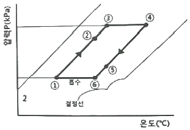
- ①→②과정:재생기에서 돌아오는 고온 농용액과 열교환에 의한 희용액의 온도상승
- ②→③과정:재생기내에서의 가열에 의한 냉매 응축
- ④→⑤과정:흡수기에서의 저온 회용액과 열교환기에 의한 농용액의 온도강하
- ⑤→⑥:흡수기에서 외부로부터의 냉각에 의한 농용액의 온도강하
(정답률: 64%)
32. 다음 냉동기의 종류와 원리의 연결로 틀린 것은?
- 증기압축식-냉매의 증발잠열
- 증기분사식-진공에 의한 물 냉각
- 전자냉동법-전류흐름에 의한 흡열작용
- 흡수식-프레온 냉매의 증발잠열
(정답률: 58%)
33. 다음 중 헬라이드 토치를 이용하여 누설검사를 하는 냉매는?
- R-134a
- R-717
- R-744
- R-729
(정답률: 70%)
34. 냉동기 속 두 냉매가 아래 표의 조건으로 작동될 때, A 냉매를 이용한 압축기의 냉동능력을 QA, B 냉매를 이용한 압축기의 냉동능력을 QB인 경우 QA/QB의 비는? (단, 두 압축기의 피스톤 압출량은 동일하며, 체적효율도 75%로 동일하다.)
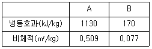
- 1.5
- 1.0
- 0.8
- 0.5
(정답률: 57%)
35. 두께 3cm인 석면판의 한 쪽면의 온도는 400℃, 다른 쪽 면의 온도는 100℃일 때, 이 판을 통해 일어나는 열전달량(W/m2)은? (단, 석면의 열전도율은 0.095W/mㆍ℃이다.)
- 0.95
- 95
- 950
- 9500
(정답률: 51%)
36. R-502를 사용하는 냉동장치의 몰리엘 선도가 다음과 같다. 이 장치의 실제 냉매순환량은 167kg/h이고, 전동기 출력이 3.5kW일 때, 실제 성적계수는?
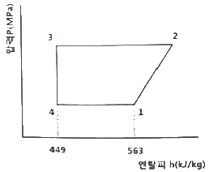
- 1.3
- 1.4
- 1.5
- 1.6
(정답률: 44%)
37. 냉매 충전용 매니폴드로 구성하는 주요밸브와 가장 거리가 먼 것은?
- 흡입밸브
- 자동용량제어밸브
- 펌프연결밸브
- 바이패스밸브
(정답률: 49%)
38. 냉매와 배관재료의 선택을 바르게 나타낸 것은?
- NH3:Cu 합금
- 크롤메탈:Al 합금
- R-21:Mg을 함유한 Al합금
- 이산화탄소:Fe 합금
(정답률: 64%)
39. 2단압축 사이클에서 증발압력이 계기압력으로 235kPa이고, 응축압력은 절대압력으로 1225kPa일 때 최적의 중간 절대압력(kPa)은? (단, 대기압은 101kPa이다.)
- 514.5
- 536.06
- 641.56
- 668.36
(정답률: 43%)
40. 30℃ 공기가 체적 1m3의 용기 내에 압력 600kPa인 상태로 들어 있을 때 용기 내의 공기 질량(kg)은? (단, 기체상수는 287J/kgㆍK이다.)
- 5.9
- 6.9
- 7.9
- 4.9
(정답률: 51%)
3과목: 배관일반
41. 증기난방 배관에서 증기트랩을 사용하는 주된 목적은?
- 관 내의 온도를 조절하기 위해서
- 관 내의 압력을 조절하기 위해서
- 배관의 신축을 흡수하기 위해서
- 관 내의 증기와 응축수를 분리하기 위해서
(정답률: 77%)
42. 배수관 설치기준에 대한 내용으로 틀린 것은?
- 배수관의 최소 관경은 20mm이상으로 한다.
- 지중에 매설하는 배수관의 관경은 50mm 이상이 좋다.
- 배수관은 배수가 흐르는 방향으로 관경을 축소해서는 안 된다.
- 기구배수관의 관경은 이것에 접속하는 위생기구의 트랩구경 이상으로 한다.
(정답률: 61%)
43. 배관 지름이 100cm이고, 유량이 0.785m3/sec일 때, 이 파이프 내의 평균 유속(m/s)은 얼마인가?
- 1
- 10
- 100
- 1000
(정답률: 53%)
44. 냉매 배관 시공법에 관한 설명으로 틀린 것은?
- 압축기와 응축기가 동일 높이 또는 응축기가 아래에 있는 경우 배출관은 하향구배로 한다.
- 증발기가 응축기보다 아래에 있을 때 냉매액이 증발기에 흘러내리는 것을 방지하기 위해 역 루프를 만들어 배관한다.
- 증발기와 압축기가 같은 높이일 때는 흡입관을 수직으로 세운 다음 압축기를 향해 선단 상향구배로 배관한다.
- 액관 배관 시 증발기 입구에 전자밸브가 있을 때는 루프이음을 할 필요가 없다.
(정답률: 64%)
45. 증기배관내의 수격작용을 방지하기 위한 내용으로 가장 적당한 것은?
- 감압밸브를 설치한다.
- 가능한 배관에 굴곡부를 많이 둔다.
- 가능한 배관의 관경을 크게 한다.
- 배관내 증기의 유속을 빠르게 한다.
(정답률: 61%)
46. 냉동장치 배관도에서 다음과 같은 부속기기의 기호는 무엇을 나타내는가?
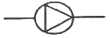
- 송풍기
- 응축기
- 펌프
- 체크밸브
(정답률: 71%)
47. 캐비테이션 현상의 발생원인으로 옳은 것은?
- 흡입양정이 작을 경우 발생한다.
- 액체의 온도가 낮을 경우 발생한다.
- 날개차의 원주속도가 작을 경우 발생한다.
- 날개차의 모양이 적당하지 않을 경우 발생한다.
(정답률: 72%)
48. 다음 중 옥상 급수탱크의 부속장치에 해당하는 것은?
- 압력 스위치
- 압력계
- 안전밸브
- 오버플로우관
(정답률: 68%)
49. 다음 중 온수온돌 난방의 바닥 매설배관으로 가장 적합한 것은?
- 주철관
- 강관
- 동관
- PVC관
(정답률: 60%)
50. 다음 배관 도시기호 중 레듀서 표시는 무엇인가?
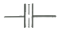
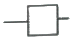
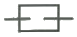
(정답률: 76%)
51. 천연고무보다 더 우수한 성질을 가지고 있으며 내유성, 내후성, 내산성, 내마모성 등이 뛰어난 고무류 패킹재는 무엇인가?
- 테프론
- 석면
- 네오프렌
- 합성수지
(정답률: 64%)
52. 배관지지 철물이 갖추어야 할 조건으로 가장 거리가 먼 것은?
- 충격과 진동에 견딜 수 있는 재료일 것
- 배관시공에 있어서 구배조정이 용이할 것
- 보온 및 방로를 위한 재료일 것
- 온도변화에 따른 관의 팽창과 신축을 흡수할 수 있을 것
(정답률: 74%)
53. 냉매 배관 시 주의사항으로 틀린 것은?
- 배관은 가능한 간단하게 한다.
- 굽힘 반지름은 작게 한다.
- 관통 개소 외에는 바닥에 매설하지 않아야 한다.
- 배관에 응력이 생길 우려가 있을 경우에는 신축이음으로 배관한다.
(정답률: 73%)
54. 열전도율이 극히 낮고 경량이며 흡수성은 좋지 않으나 굽힘성이 풍부한 유기질 보온재는?
- 펠트
- 코르크
- 기포성 수지
- 규조토
(정답률: 59%)
55. 배관의 온도변화에 의한 수축과 팽창을 흡수하기 위한 이음쇠로 적절하지 못한 것은?
- 벨로즈
- 플랙시볼
- U밴드
- 플랜지
(정답률: 58%)
56. 개방식 팽창탱크 주변의 배관에서 팽창탱크의 수면 아래에 접속되는 관은?
- 팽창관
- 통기관
- 안전관
- 오버플로우관
(정답률: 58%)
57. 이음쇠 중 방진, 방음의 역할을 하는 것은?
- 플랙시블형 이음쇠
- 슬리브형 이음쇠
- 스위블형 이음쇠
- 루프형 이음쇠
(정답률: 67%)
58. 관 이음쇠의 종류에 따른 용도의 연결로 틀린 것은?
- 와이(Y)-분기할 때
- 벤드-방향을 바꿀 때
- 플러그-직선으로 이을 때
- 유니온-분해, 수리, 교체가 필요할 때
(정답률: 63%)
59. 배관지지 금속 중 레스트레인트(restraint)에 해당하지 않는 것은?
- 행거
- 앵커
- 스토퍼
- 가이드
(정답률: 61%)
60. 정압기의 부속 설비에서 가스 수요량이 급격히 증가하여 압력이 필요한 경우 쓰이는 장치는?
- 정압기
- 가스미터
- 부스터
- 가스필터
(정답률: 68%)
4과목: 전기제어공학
61. 대칭 3상 Y부하에서 부하전류가 20A이고 각 상의 임피던스가 Z=3+j4(Ω)일 때, 이 부하의 선간전압(V)은 약 얼마인가?
- 141
- 173
- 220
- 282
(정답률: 59%)
62. 인디셜 응답이 지수 함수적으로 증가하다가 결국 일정 값으로 되는 계는 무슨 요소인가?
- 미분요소
- 적분요소
- 1차 지연요소
- 2차 지연요소
(정답률: 62%)
63. 회전중인 3상 유도전동기의 슬립이 1이 되면 전동기 속도는 어떻게 되는가?
- 불변이다.
- 정지한다.
- 무부하 상태가 된다.
- 동기속도와 같게 된다.
(정답률: 70%)
64. 전동기 정역회로를 구성할 때 기기의 보호와 조직자의 안전을 위하여 필수적으로 구성되어야 하는 회로는?
- 인터록화로
- 플립플롭회로
- 정지우선 자기유지회로
- 기동우선 자기유지회로
(정답률: 70%)
65. R-L-C 직렬회로에 t=0에서 교류전압 u=Emsin(ωt+θ)[V]를 가할 때 이 회로의 응답유형은? (단,
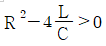
이다.)- 완전진동
- 비진동
- 임계진동
- 감쇠진동
(정답률: 47%)
66. 단일 궤환 제어계의 개루프 전달함수가
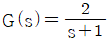
일 때, 압력 r(t)=5u(t)에 대한 정상상태 오차 ess는?- 1/3
- 2/3
- 4/3
- 5/3
(정답률: 44%)
67. 계전기를 이용한 시퀀스제어에 관한 사항으로 옳지 않은 것은?
- 인터록 회로 구성이 가능하다.
- 자기 유지 회로 구성이 가능하다.
- 순차적으로 연산하는 직렬처리 방식이다.
- 제어결과에 따라 조작이 자동적으로 이행된다.
(정답률: 53%)
68. 제어량을 어떤 일정한 목표값으로 유지하는 것을 목적으로 하는 제어는?
- 추종제어
- 비율제어
- 정치제어
- 프로그램제어
(정답률: 56%)
69. 도체의 전기저항에 대한 설명으로 틀린 것은?
- 같은 길이, 단면적에서도 온도가 상승하면 저항이 증가한다.
- 단면적에 반비례하고 길이에 비례한다.
- 고유 저항은 백금보다 구리가 크다.
- 도체 반지름의 제곱에 반비례한다.
(정답률: 64%)
70. 회로시험기(Multi Meter)로 직접 측정할 수 없는 것은?
- 저항
- 교류전압
- 직류전압
- 교류전력
(정답률: 65%)
71. 그림과 같은 단위계단함수를 옳게 나타낸 것은?
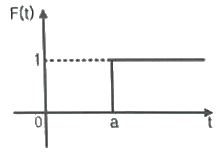
- u(t)
- u(t-a)
- u(a-t)
- u(-a-t)
(정답률: 72%)
72. 어떤 회로에 220V의 교류전압을 인가했더니 4.4A의 전류가 흐르고, 전압과 전류와의 위상차는 60°가 되었다. 이 회로의 저항성분(Ω)은?
- 10
- 25
- 50
- 75
(정답률: 50%)
73. 기계적 변위를 제어량으로 해서 목표값의 임의의 변화에 추종하도록 구성되어 있는 것은?
- 자동조정
- 서보기구
- 정치제어
- 프로세스제어
(정답률: 52%)
74. 다음 회로에서 합성 정전용량(μF)은?
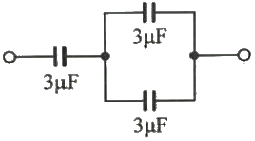
- 1.1
- 2.0
- 2.4
- 3.0
(정답률: 54%)
75. 직류전동기의 속도제어방법 중 광범위한 속도제어가 가능하며 정토크 가변속도의 용도에 적합한 방법은?
- 계자제어
- 직렬저항제어
- 병렬저항제어
- 전압제어
(정답률: 53%)
76. 서보 전동기는 다음 중 어디에 속하는가?
- 검출기
- 증폭기
- 변환기
- 조작기기
(정답률: 74%)
77. 다음 중 기동 토크가 가장 큰 단상 유도전동기는?
- 분상기동형
- 반발기동형
- 셰이딩코일형
- 콘덴서기동형
(정답률: 58%)
78. 그림과 같은 회로에서 해당되는 램프의 식으로 옳은 것은?
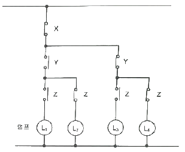
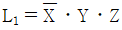
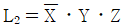
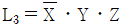
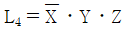
(정답률: 72%)
79. 목표값이 미리 정해진 변화량에 따라 제어량을 변화시키는 제어는?
- 정치 제어
- 추종 제어
- 비율 제어
- 프로그램 제어
(정답률: 60%)
80. 그림과 같은 블록선도와 등가인 것은?
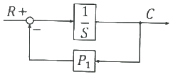
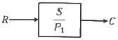
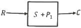
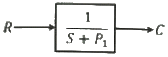
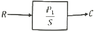
(정답률: 62%)